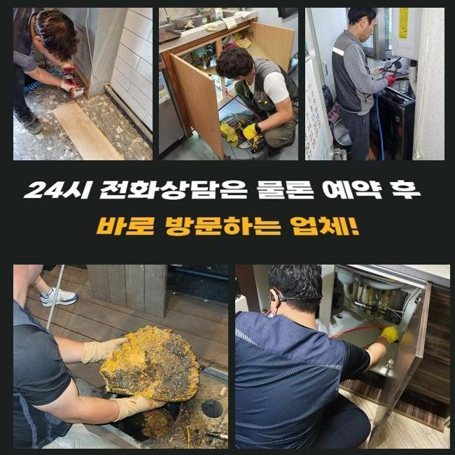
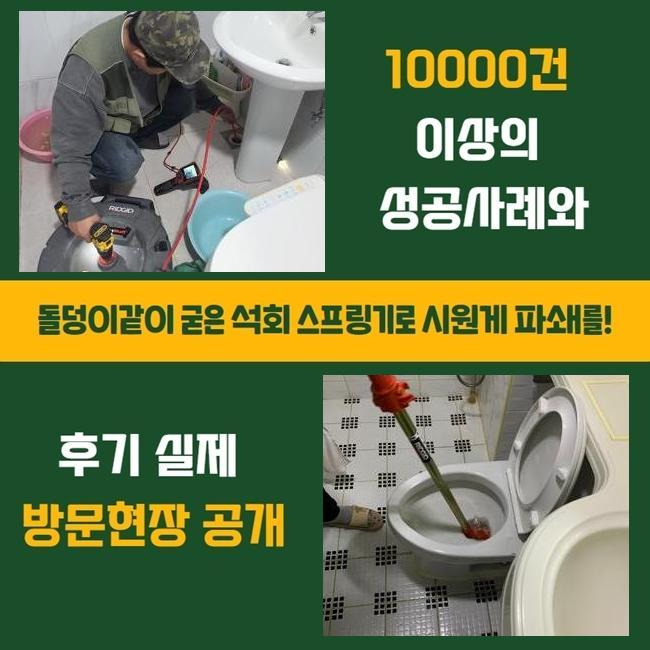
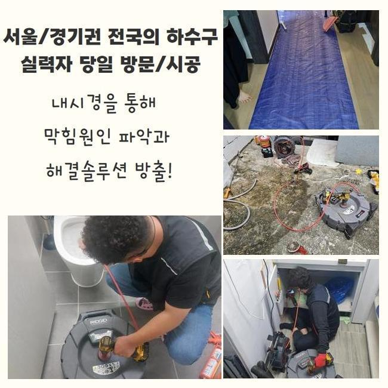
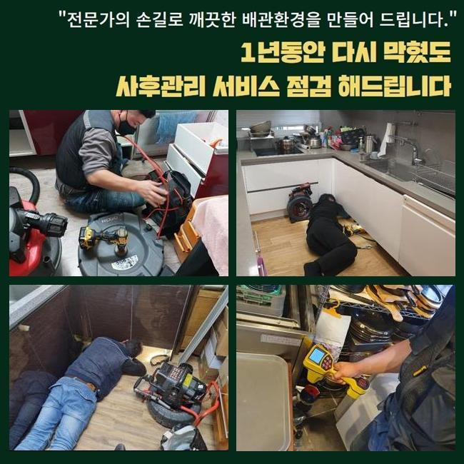
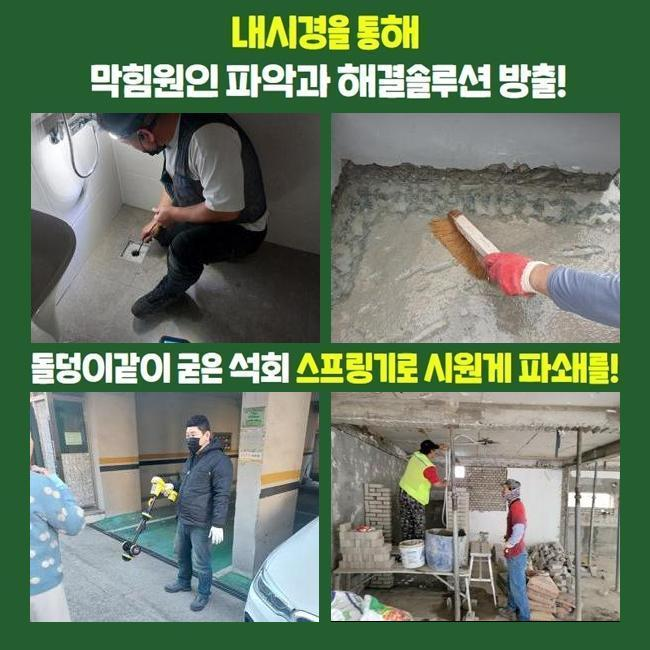

🏠 성남 산성동오수관역류 태평동 맨홀역류 누수
성남 배관막힘 전문 시공 후기

📋 작업 개요
- 위치: 성남
- 서비스 유형: 배관막힘, 맨홀막힘, 누수수리, 역류해결, 배관청소
- 작업 일시: 2025. 1. 25. 12:41
- 업체명: 하수구수사대 (010-5615-2118)
🔍 문제 상황
성남 산성동오수관역류 태평동 맨홀역류 누수
어제 저녁에 의뢰인께 긴급한 방문 요청을 전달 받아서 현장으로 출동하였습니다
사례자님께서 다급한 문제로 전화를 주신 것이고 저희 업체는 빨리 필요한 기계를 싣고서 목적지에 도착했습니다
하수설비에 이상이 발생하면 의뢰인께 매우 불편한 상황이 생기므로 이러한 문제점을 조속히 처리하는게 제일 중요한 포인트입니다
빠르게 목적지에 도착하여 우선적으로 문제 지점을 확인해봤어요
하수관 역류사고는 세탁실 안쪽에서 발견됐는데 정상적으로 하수가 배출되지 않았고 역으로 치솟고 있었습니다
고객께서는 배수구 막힘문제를 고쳐보고자 다양하게 노력 해봤지만 점점 문제가 심각해져서 세탁기가 고장나는 상황까지 왔다고 말씀 하셨습니다
일반적으로 가정집에서 하수라인이 막힌 문제들을 직접 수리 해보겠다고 시중에서 팔고있는 관련 제품들을 사용해보시지만 문제의 원인이 되는 부분을 찾아 처리할 수 없습니다

🔎 원인 분석
💡 전문가 진단: 정밀 진단 장비를 사용하여 슬러지의 고착 여부를 판명하고 타격/세척 작업을 실시했습니다.
하수라인은 오래될수록 노폐물등이 쌓여서 문제가 발생하므로 명확한 이유를 찾고 그에 맞는 작업방식을 적용해야 합니다
우선 배수구 안쪽과 건물 외부쪽 배수관 확인을 했어요
하수관 역류상황을 자세히 알아보려면 안쪽뿐만 아니고 건물 밖으로 이어진 배관들도 점검하는 것은 필수입니다
배수구는 집에서 사용한 오수를 바깥쪽 하수관으로 배출시키는 형태라서 막힘문제의 원인들이 안쪽의 배수관에 있는 것인지 바깥쪽에 있는지 잘 살펴봐야합니다
전반적으로 검사를 해보니 밖으로 난 하수관에 침전물이 쌓여서 하수가 제대로 배출되지 않았어요
이와같은 배수구 막힘문제를 작업 할 때는 내외부 배수관을 일괄적으로 처리합니다
우선 내시경기기를 이용해 배수관 안쪽 상황을 확인해봤어요
내시경기로 배수라인 안쪽의 슬러지가 배수라인을 완전히 막고있는 상황을 확인 할 수 있었습니다

🔧 작업 과정
샤프트기계를 이용해서 배수관에 가득쌓인 불순물을 처리하는 과정을 시작했어요
샤프트기는 체인이 돌아가는 파워를 이용하여 불순물을 효율적으로 처리해내는 장치로서 하수라인에 달라붙어 있는 단단한 노폐물을 분쇄해서 내보내는 장비예요
샤프트기계는 하수라인 내벽에 두껍게 층을 이룬 슬러지를 파쇄하여 배관 속을 깔끔하게 청소해요
하수관이 막혀있는 상황이 생각보다 심한편이라 전문가가 반복적으로 배수관 안쪽에 쌓여있던 이물질들을 모두 제거 할 수 있었습니다
소량의 찌꺼기등은 사용 할 때마다 배수관에 적재되어 오수가 빠져나가는 길목을 막아버리므로 위와 같이 노폐물이 쌓이지 않게끔 예방해야합니다
집의 안쪽 하수관에서 빼낸 슬러지가 배관 속으로 들어가지 않게 걸러서 버리는 작업과정까지 끝내고 하수라인을 최종적으로 점검합니다
오늘은 딱딱하게 변형된 이물질이 배수관을 막아버린 상황이였는데 시공작업을 완료 하고나서 내시경기를 활용해서 배수구 내부 상태가 깔끔해진걸 확인하고 마무리 지었습니다
모든 작업을 끝내고 물을 틀어 계속적으로 내려가는 것을 보면서 배수적인 다른 문제점이 남아있는건 아닌지 통수검사를 실시했어요
배수구에서 물들이 문제없이 아주 잘흘러가는 모습까지 확인한 후에 작업을 마무리 지었습니다
고객께서는 원인뿐만 아니라 오류가 처리되는 상황을 시공에 들어가면서부터 저희들과 함께하며 모든 과정으로 지켜보셨어요
저희 전문가는 하수시설의 여러 오류문제를 빠르고 효과적으로 해결 해드려요
배수구가 막힌 경우에 의뢰인께 매우 불편한 상황이 일어나므로 저희 업체는 신속정확하게 처리 해드리고자 항상 긴급출동하고 있습니다
이러한 배수구 막힘 사고는 불편감만 주는게 아니라 위생적으로도 이어지기때문에 신속하게 처리하시는게 좋습니다


✅ 작업 완료
혹시 밑에층에도 피해를 주게 되었다면 윗집에서 영향을 준 누수의 문제인지 알아봐야하므로 전문진에게 점검을 의뢰하여 확인을 해보시기 바랍니다
저희 업체는 효율적이고 신속정확한 해결로써 고객분께서 만족하시도록 진행 해드리겠습니다
하수설비 관련 전문진의 조언이 필요하다 싶으시면 저희에게 연락주시면 친절하고 자세하게 설명 해드리겠습니다
하수관의 문제로 도움이 필요하시다면 저희 업체로 연락주세요!


⚠️ 베란다 누수 및 방수 관리 방법
- ✅ 비가 많이 올 때 창틀 주변이나 아래층 천장에 얼룩이 생기는지 정기적으로 확인해 보세요.
- ✅ 우수관 주변 실리콘 마감이 들뜨거나 깨진 틈새가 있는지 손상 여부를 수시로 체크하세요.
- ✅ 베란다 바닥 타일의 줄눈(메지)이 소실되면 그 틈으로 물이 침투하여 누수가 유발됩니다.
- ✅ 누수 의심 증상 발견 시 방치하면 아래층 손실이 커지므로 즉시 전문가의 진단을 받으십시오.
💡 핵심 정리
- 확실한 장비 작업(내시경 점검 및 샤프트 스케일링)으로 원인을 뿌리 뽑습니다.
- 작업 후 1년 이내에 동일한 부위 재발 시 100% 무상 A/S 서비스를 보장합니다.
- 서울 · 경기 · 인천 전 지역에 24시간 언제든 긴급 출동할 수 있도록 항시 대기 중입니다.
❓ 자주 묻는 질문 (FAQ)
🚨 성남 배관막힘 문제로 고민이신가요?
정확한 원인 진단과 확실한 시공으로 재발 없는 해결을 약속드립니다.
24시간 긴급 출동 | 서울 · 경기 · 인천 전지역 | 1년 내 재발 시 무상 A/S